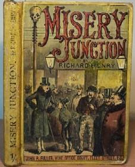

Thursday, March the 12th, 2009
back to: title, date or indexes

Pansy Cradledew draws to my attention this title from a small collection of Victorian Yellowjackets*. Alas, I have never read Misery Junction by Richard Henry, and I find myself wondering if the story is set in one of the notorious junctions and sidings of the Hooting Yard to O'Houlihan's Wharf Branch Line. There, Misery Junction is the foul rainswept junction between two other junctions, one called Moral Squalor Junction and the other known as Pretty Little Dandelion Junction. It should be noted that the pretty little dandelions growing so profusely around the railway lines at that spot were contaminated with some kind of toxin, and the pretty little ponies which cantered up to them for a lunchtime chew were swiftly carted off to the knackers yard, stone dead.
* NOTE : Pansy quite rightly points out that I have confused a series of 19th century paperbacks (Yellowbacks) with a type of wasp (Yellowjacket). Such an easy mistake to make.